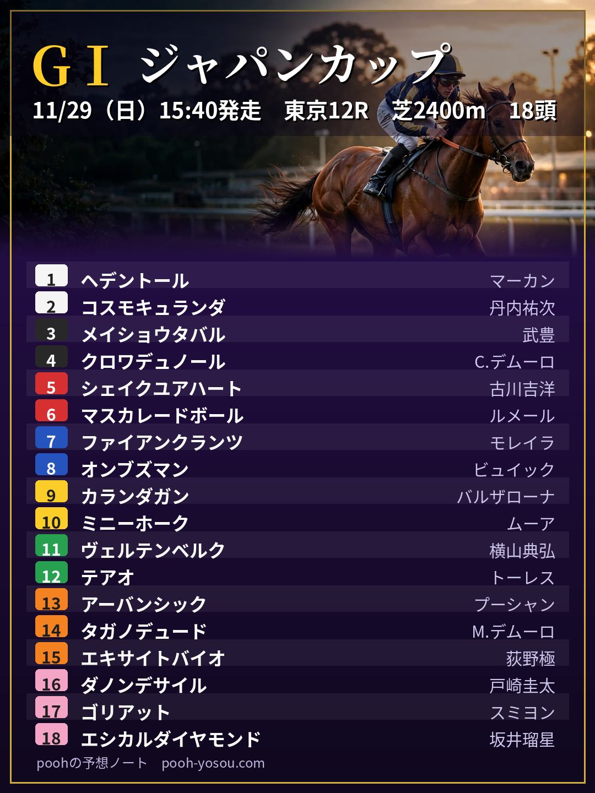
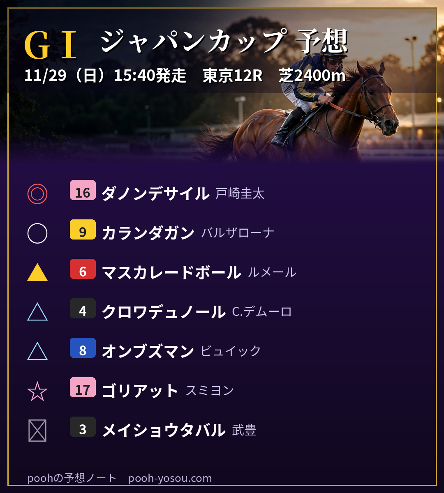

ジャパンカップ予想 2026-11-29｜ダノンデサイルを本命に、連覇を狙うカランダガンと昨年2着マスカレードボールを相手の軸に
第46回ジャパンカップは11月29日（日）、東京競馬場の芝2400m、東京12R（発走15時40分）で行われます。出走は18頭で、日本馬12頭に外国馬6頭が加わりました。枠順は11月26日に確定しています。
昨年の勝ち馬カランダガンが連覇を狙い、前走の英チャンピオンSでそのカランダガンを破ったオンブズマンも来日しました。迎える日本勢の軸は、前走の天皇賞・秋を勝ったダノンデサイルと、昨年アタマ差の2着だったマスカレードボールです。実績馬同士の力比べとして組み立てます。

JRAのデータ分析（過去10年）では、1番人気が6勝し、3着以内に入った延べ30頭のうち27頭が5番人気以内でした。勝ち馬10頭はすべて1〜4枠から出ていて、前走がGⅠだった馬が中心です。勝ち馬には、芝2400m級か芝2500mのGⅠ・GⅡを勝っていた実績も共通しています。堅く収まりやすいレースで、人気と距離実績を外しては組み立てにくい一戦です。
ジャパンカップは1981年に創設された、日本初の国際招待競走です。第1回はアメリカのメアジードーツが当時の日本レコードで勝ち、日本馬との差を見せつけました。その後、日本馬では1984年のカツラギエース、1985年のシンボリルドルフが連勝し、1992年からは国際GⅠに認定されています。昨年はカランダガンが外国調教馬として20年ぶりに勝ちました。今年、そのカランダガンが外国馬初の連覇に挑みます。
◎16番 ダノンデサイル（戸崎圭太・58.0kg）
○9番 カランダガン（M.バルザローナ・58.0kg）
▲6番 マスカレードボール（C.ルメール・58.0kg）
△4番 クロワデュノール（C.デムーロ・58.0kg）
△8番 オンブズマン（W.ビュイック・58.0kg）
☆17番 ゴリアット（C.スミヨン・58.0kg）
✕3番 メイショウタバル（武豊・58.0kg）
◎ ダノンデサイル（戸崎圭太・58.0kg）
2024年の日本ダービー馬で、舞台の東京芝2400mはそのダービーを勝ったコースと距離です。ドバイシーマクラシックではカランダガンを破っており、前走の天皇賞・秋も勝って勢いに乗ります。昨年はこのレースで3着でした。8枠16番は、過去10年の勝ち馬が1〜4枠に偏るデータとは逆の枠ですが、近走の内容と舞台適性を優先して本命に置きます。
○ カランダガン（M.バルザローナ・58.0kg）
昨年の勝ち馬で、勝ち時計2分20秒3はJRAレコードでした。今年もGⅠを勝っていて、19戦で4着以下は馬場が悪化したコロネーションCの4着だけという安定感があります（JRA公式）。5枠9番から、昨年と同じ末脚が届く展開になれば連覇があってもおかしくありません。ダノンデサイルとはドバイで先着を許した相手関係もあるので、対抗までとします。
▲ マスカレードボール（C.ルメール・58.0kg）
昨年はカランダガンとアタマ差の2着で、当時のレーティング128は3歳芝の日本馬で歴代最高とされた数字でした（JRA公式）。3枠6番は過去10年の勝ち馬が集まる内寄りの枠です。前走の天皇賞・秋は11着で、調教後の馬体重が+12キロと報じられた点は割り引いて見ますが、この舞台での昨年の走りを軽くは見られず、単穴に置きます。
△ クロワデュノール（C.デムーロ・58.0kg）
GⅠを4勝している4歳馬で、2枠4番と内寄りの枠を引きました。宝塚記念はメイショウタバルの2着、前走の天皇賞・秋は5着からの巻き返しを狙う立場です。距離とコースをこなせる実績は上位組と比べても見劣りせず、内枠から流れに乗れれば連下以上があっていい組み合わせです。
△ オンブズマン（W.ビュイック・58.0kg）
レーティング131は中距離で世界一とされる数字で、前走の英チャンピオンSではカランダガンを完勝しました。実力だけなら本命級です。ただ、GⅠの勝ち鞍は1800〜2050mに集まっていて、2400mは今回が初めてです（JRA公式）。距離の壁を越えられるかを確認するまでは、連下にとどめます。
☆ ゴリアット（C.スミヨン・58.0kg）
2400m級のGⅠを3年連続で勝っている馬で、キングジョージ、バーデン大賞、オイロパ賞と距離実績はこのメンバーでも屈指です。2024年のジャパンカップでは6着で、外国馬では最先着でした。東京の芝は2度目になります。8枠17番と外枠で、人気どころに比べれば評価が下がる立場ですが、持久力勝負に寄ったときに浮上する穴として挙げます。
✕ メイショウタバル（武豊・58.0kg）
宝塚記念を連覇したGⅠ馬で、逃げて持久力勝負に持ち込む形が持ち味です。ただ前走の凱旋門賞は14着で、立て直しの途上にあります。このメンバーで逃げ切るには、外国馬と日本馬の両方から早めに競りかけられる展開が想定され、人気を集める立場でも買い目には入れません。
基本4点
- 馬連 ◎−○（16−9）
- 馬連 ◎−▲（16−6）
- 馬連 ○−▲（9−6）
- 三連複ボックス ◎○▲△（16・9・6・4）（4点）
穴2点
- 馬連 ☆−◎（17−16）
- 三連単フォーメーション ☆→◎→○▲（17→16→9・6）（2点）

軸はダノンデサイル、相手の本線はカランダガンとマスカレードボールです。過去10年のデータが示す内枠と人気の強さに対して、今年は外枠のダノンデサイルの勢いを買う形になりました。当日（11月29日）の東京の馬場状態と天気は未確認で、大きく変わるようならレース前に見直します。結果はレース後（11月29日）の振り返り記事で、当たり外れを含めてそのまま載せる予定です。
（振り返り記事へのリンクは、公開後にここへ追加します）
※本記事は個人の予想であり、的中や利益を保証するものではありません。馬券の購入は自己責任で、無理のない範囲で楽しんでください。出走・天候などの最新情報はJRA公式サイトでご確認ください。
（情報確認：2026年11月26日、枠順・騎手・斤量は枠順確定報道（スポーツ報知／サンケイスポーツ／netkeiba）で照合。近走・実績は下調べメモ（JRA公式 出走馬情報 https://www.jra.go.jp/keiba/g1/jc/horse.html 、2026年11月26日朝確認）に基づく。過去データはJRA公式 データ分析 https://jra.jp/keiba/g1/jc/data.html 、レースの歴史はJRA公式 https://www.jra.go.jp/keiba/g1/jc.html で確認）
この記事は個人の予想と記録です。馬券・くじの購入はご自身の判断と責任でお願いします。詳しくは免責事項をご覧ください。